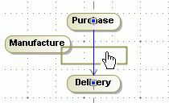

Inserting a shape on the path
- Select the shape you want to insert or create a new one.
- Drag the shape onto the path (highlighted in blue) and drop it.
- In the dialog that appears, click the appropriate button to insert the action either Before Control Flow or After Control Flow.
